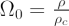
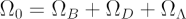

The density parameter is the ratio of the average density of matter and energy in the Universe to the critical density (the density at which the Universe would stop expanding only after an infinite time). The density parameter (Ω0) is given by:

where (ρ) is the actual density of the Universe and (ρc) the critical density.
Although current research suggests that Ω0 is very close to 1, it is still of great importance to know whether Ω0 is slightly greater than 1, less than 1, or exactly equal to 1, as this reveals the ultimate fate of the Universe. If Ω0 is less than 1, the Universe is open and will continue to expand forever. If Ω0 is greater than 1, the Universe is closed and the will eventually halt its expansion and recollapse. If Ω0 is exactly equal to 1 (which would seem a remarkable coincidence) then the Universe is flat and contains enough matter to halt the expansion but not enough to recollapse it.
It is important to note that the ρ used in the calculation of Ω0 is the total mass/energy density of the Universe. In other words, it is the sum of a number of different components including both normal and dark matter as well as the dark energy suggested by recent observations.
We can therefore write:

where ΩB is the density parameter for normal baryonic matter, ΩD is the density parameter for dark matter and ΩΛ is the density parameter for dark energy.
Current observations suggest that we live in a dark energy dominated Universe with ΩΛ = 0.73, ΩD = 0.23, and ΩB = 0.04. To the accuracy of current cosmological observations, this means that we live in a flat, Ω0 = 1 Universe.
See also: flatness problem.